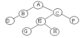
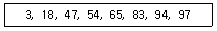
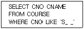
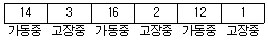
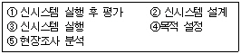
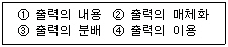
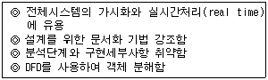
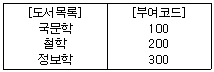
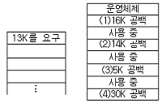

정보처리산업기사 (2000-05-14 기출문제)
1과목: 데이터 베이스
1. 아래 이진트리를 후위순서(postorder)로 운영한 결과는?

- ABCDEFGH
- DBGHEFCA
- ABDCEGHF
- BDGHEFAC
(정답률: 76%)

2. E-R 다이어그램에서 보기의 표현은 어떤 요소를 나타내는 것인가?
- 개체
- 관계
- 항목
- 속성
(정답률: 81%)
3. 데이터베이스 설계시 요구분석단계에서 나온 결과(명세)를 E-R 다이어그램과 같은 DBMS에 독립적이고 고차원적인 표현기법으로 기술하는 것을 무엇이라고 하는가?
- 개념 스키마 모델링
- 트랜잭션 모델링
- 물리적 설계
- 계층 데이터베이스 모델링
(정답률: 49%)
4. 관계 데이터 연산에 관한 내용으로 적당하지 않는 것은?
- 관계 대수는 원하는 정보와 그 정보를 어떻게 유도하는가를 기술하는 절차적인 방법이다.
- 관계 해석은 원하는 정보가 무엇이라는 것만 정의하는 비절차적 특성을 지닌다.
- 관계해석에는 튜플 관계해석(tuple relational calculus)과 도메인 관계해석(domain relational calculus)이 있다.
- 관계 해석으로 표현한 식은 관계대수로 표현할 수 없다.
(정답률: 49%)
5. 논리적 데이터 모델의 종류와 가장 거리가 먼 것은?
- 관계형 모델
- 구조적 모델
- 계층형 모델
- 네트워크 모델
(정답률: 37%)
6. 연결리스트(linked list)에 대한 설명으로 거리가 먼 것은?
- 노드의 삽입과 삭제가 용이하다.
- 연속적으로 기억공간이 없어도 저장이 가능하다.
- 연접리스트나 배열보다 기억공간이 절약된다.
- 희소행렬을 표현하는데 이용된다.
(정답률: 36%)
7. 시스템 카탈로그에 포함되는 정보가 아닌 것은?
- 테이블
- 사용자
- 뷰
- 개체
(정답률: 22%)
8. What is the entity type definition correctly?
- a set of attributes that have the same entities
- a set of entities that have the same domains
- a set of attributes that have the same domains
- a set of entities that have the same attributes
(정답률: 42%)
9. 색인순차 파일(Indexed Sequential Access Method file)의 인덱스에 해당하지 않는 것은?
- master 인덱스
- prime 인덱스
- cylinder 인덱스
- track 인덱스
(정답률: 67%)
10. 삽입(embedded) SQL을 표현하는 응용프로그램 특성이 아닌 것은?
- 삽입 SQL은 PASCAL, COBOL, C와 같은 호스트 프로그래밍 언어로 작성된 응용프로그램 속에 내장시켜 사용할 수 있다.
- 삽입 SQL 실행문은 호스트 언어의 실행문이 나타날 수 있는 곳이면 어디든지 나타날 수 있다.
- 호스트 변수와 데이터베이스 필드의 이름이 중복 사용될 수 없다.
- 삽인 SQL문은 호스트 변수를 포함할 수 있다.
(정답률: 39%)
11. 데이터베이스 관리자(DBA)의 역할에 대한 설명으로 거리가 먼 것은?
- 데이터베이스의 스키마를 정의한다.
- 데이터베이스의 저장구조 및 접근 방법을 정의한다.
- 사용자들에게 데이터베이스의 접근 권한을 부여한다.
- 응용 프로그램을 통하여 데이터베이스를 접근한다.
(정답률: 58%)
12. 데이터베이스 관리 시스템(DBMS)의 필수기능 중 제어기능에 대한 설명으로 거리가 먼 것은?
- 데이터베이스를 접근하는 갱신, 삽입, 삭제 작업이 정확하게 수행하여 무결성 유지되도록 제어해야 한다.
- 데이터의 논리적 구조와 물리적 구조 사이에 변환이 가능하도록 두 구조 사이의 사상(Mapping)을 명시하여야 한다.
- 정당한 사용자가 허가된 데이터만 접근할 수 있도록 보안(Security)을 유지하고, 권한(Authority)을 검사할 수 있어야 한다.
- 여러 사용자가 데이터베이스를 동시에 접근하여 데이터를 처리할 때 처리 결과가 항상 정확성을 유지하도록 병행제어를 할 수 있도록 한다.
(정답률: 64%)
13. 관계형 데이터베이스의 릴레이션을 조작할 때 발생하는 이상현상(anomaly)에 관한 설명으로 적절하지 않은 것은?
- 데이터의 종속으로 인해 발생하는 이상현상에서는 삭제이상, 삽입이상, 갱신 이상이 있다.
- 릴레이션의 한 튜플을 삭제함으로써 연쇄삭제로 인해 정보의 손실을 발생시키는 현상이 삭제 이상이다.
- 데이터를 삽입할 때 불필요한 데이터가 함께 삽입되는 현상을 삽입이상이라 한다.
- 튜플 중에서 일부 속성을 갱신함으로써 정보의 모순성이 발생하는 현상이 갱신 이상이다.
(정답률: 20%)
14. 스택(stack)의 사용과 거리가 먼 것은?
- 부프로그램(sub program)의 호출
- 산술식 표현
- 행렬표현
- 자료의 후입선출(last-in-first-out) 방법
(정답률: 57%)
15. Which one of the following is not a kind of database language?
- data definition language
- data manipulation language
- data directory language
- data control language
(정답률: 53%)
16. 아래 자료에서 65를 찾기 위하여 2진 검색할 경우 비교해야 할 횟수는?

- 2
- 3
- 4
- 5
(정답률: 34%)
17. 다음 파일 중 해시(hash) 함수가 필요한 것은?
- ISAM 파일
- VSAM 파일
- DAM 파일
- 링파일
(정답률: 36%)
18. 데이터베이스관리자가 기본 테이블에서 임의로 유도하여 만드는 테이블로서 사용자에게 접근이 허용된 자료만을 제한적으로 보여주기 위한 테이블을 무엇이라 하는가?
- 임시테이블(temporary table)
- 뷰 테이블(view table)
- 색인테이블(index table)
- 기본테이블(base table)
(정답률: 67%)
19. 9 두 릴레이션에 저장된 튜플간에 데이터 일관성을 유지하기 위한 것으로서 릴레이션 R1에 저장된 튜플이 릴레이션 R2에 있는 튜플을 참조하려면 참조되는 튜플이 반드시 R2에 존재해야 한다는 조건은?
- 참조 무결성
- 개체 무결성
- 주소 무결성
- 원자값 무결성
(정답률: 69%)
20. 다음 SQL 문에서 WHERE 절의 조건이 의미하는 것은?

- S로 시작되는 3문자의 CNO를 검색한다.
- S로 시작되는 모든 문자 CNO를 검색한다.
- 문자열로만 이루어진 모든 CNO를 검색한다.
- S를 포함한 모든 CNO를 검색한다.
(정답률: 73%)
2과목: 전자 계산기 구조
21. 다음 명령어 형식에 대한 특성 중 옳지 않은 것은?
- 3-주소 명령어 형식은 명령어 길이가 증가한다.
- 2-주소 명령어 형식은 MOVE 명령이 필요하다.
- 1-주소 명령어 형식은 스택이 필요하다.
- 0-주소 명령어 형식은 PUSH, POP 명령이 필요하다.
(정답률: 53%)
22. 기계어에 대한 설명으로 옳지 않은 것은?
- 수행시간이 신속하다.
- 하드웨어 운용이 비효율적이다.
- 프로그램 과정이 불편하다.
- 언어의 호환성이 없다.
(정답률: 43%)
23. 중앙처리장치와 주기억장치에 제한을 받지 않고 중앙처리장치의 속도로 수행되도록 하는 기억장치는?
- 캐시 메모리
- 인스트럭션 버퍼
- CAM
- 제어기억장치
(정답률: 78%)
24. 배치처리가 편리한 것은?
- 급여계산처리
- 보통예금처리
- 신원조회처리
- 공정관리처리
(정답률: 36%)
25. A의 내용이 1010, B의 내용이 1100이다. masking operation 후의 A 내용은?
- 1000
- 0010
- 1110
- 0110
(정답률: 46%)
26. CPU내 제어기의 제어 데이터 중에 포함되지 않는 것은?
- 각 메이저 스테이트 사이의 변천을 제어하는 제어 데이터
- 중앙처리장치의 제어점을 제어하는데 필요한 제어 데이터
- 인스트럭션의 수행순서를 결정하는데 필요한 제어 데이터
- 입, 출력 장치의 제어점을 제어하는 제어 데이터
(정답률: 47%)
27. magnetic tape와 관계가 없는 것은?
- Access arm
- Magnetic head
- Parity bit
- Protect ring
(정답률: 28%)
28. 원시 프로그램 컴파일러에 의해 번역하면 목적 프로그램이 생성되는데 이 목적 프로그램은 즉시 실행할 수 없는 상태의 기계어이다. 이를 실행 가능한 로드 모듈(Load Module)로 변환하는 것을 무엇이라 하는가?
- Linkage Editor
- Interpreter
- Compiler
- Assembler
(정답률: 28%)
29. 다음의 어셈블리어로 나타낸 기본적인 명령(Instruction)중 제어 기능을 가진 명령만으로 짝지어진 것은?
- JMP X. ROL
- LAD X, SZC
- SMA, JMP X
- JMP X, LAD X
(정답률: 42%)
30. 선형구조가 아닌 것은?
- stack
- queue
- deque
- ling
(정답률: 65%)
31. DAM(Direct Access Method)으로 사용하지 않는 장치는?
- Magnetic Tape
- Data Cell
- Magnetic Drum
- Magnetic Disk
(정답률: 45%)
32. CPU가 명령어를 수행하는데 필요한 동작이 아닌 것은?
- buffer
- fetch
- decode
- execute
(정답률: 52%)
33. 인터럽트를 발생한 장치가 프로세서에게 분기할 곳의 정보를 제공해 주는 것과 관계있는 것은?
- PSW
- 서브루틴
- 인터럽트 enable 신호
- 인터럽트 벡터(vector)
(정답률: 59%)
34. 1의 보수(1?s complement)로 표시되는 16비트수에 0을 나타내는 표현은 몇 개 있는가?
- 3개
- 2개
- 1개
- 없다.
(정답률: 35%)
35. 스택 메모리가 사용되는 경우는?
- 무조건 점프(jump) 요구가 받아들여졌을 때
- 브랜치 명령이 실행될 때
- 메모리요구가 받아들여졌을 때
- 인터럽트가 받아들여졌을 때
(정답률: 74%)
36. 가상기억체제에 대한 설명으로 옳지 않은 것은?
- 컴퓨터속도는 문제시되지 않는다.
- 주소공간의 확대가 목적이다.
- 사용할 수 있는 보조기억장치는 DASD이어야 한다.
- 보조기억장치로는 자기테이프가 많이 사용된다.
(정답률: 54%)
37. Binary 연산을 표시하는 것은?
- Complement
- Shift
- AND
- Rotate
(정답률: 68%)
38. 4비트로 나타낼 수 있는 정보단위는?
- Nibble
- Character
- Full-Word
- Double-Word
(정답률: 67%)
39. 인터럽트요인이 받아들여졌을 때 CPU가 확인하여야 할 사항에 불필요한 것은?
- 프로그램카운터 내용
- 상태조건의 내용
- 레지스터의 내용
- 스택메모리의 내용
(정답률: 52%)
40. 디스크에서 하나의 블록에 해당하는 정보의 주소는 다음과 같이 지정해야 하는데 이 중 옳지 않은 것은?
- 헤드
- 디스크 표면
- 실린더 혹은 트랙
- 섹터
(정답률: 26%)
3과목: 시스템분석설계
41. 코드 작성시 유의사항으로 적합하지 않은 것은?
- 공통성이 있어야 한다.
- 복잡성이 있어야 한다.
- 체계성이 있어야 한다.
- 확장성이 있어야 한다.
(정답률: 82%)
42. 입력 데이터의 특정항목 합계값을 미리 구하여 이것과 입력과정에서의 계산을 통해 얻은 합계와 비교하여 동일한 결과가 얻어지는지를 체크하는 검사를 무엇이라고 하는가?
- 대조검사
- 일괄합계검사
- 타당성검사
- 균형검사
(정답률: 57%)
43. 하나 이상의 유사한 객체들을 묶어서 하나의 공통된 특성을 표현한 객체 지향 요소는?
- 객체(object)
- 클래스(class)
- 실체(instance)
- 메시지(message)
(정답률: 74%)
44. 시스템 운용기간이 아래와 같을 때 평균 고장 시간(MTBF)은?

- 2
- 8
- 14
- 16
(정답률: 30%)
45. 프로그램 단위별로 디버깅이 끝난 것을 모아 서로 연관된 프로그램군(group)을 계통적으로 감시하는 테스트 방법을 무엇이라고 하는가?
- 단위 테스트
- 결합 테스트
- 종합 테스트
- 시스템 테스트
(정답률: 33%)
46. 시스템 문서화(Documentation)의 필요성에 대한 설명으로 가장 거리가 먼 것은?
- 개발 후 시스템 유지보수가 편리하다.
- 시스템 개발 중 추가 변경에 따른 혼란을 방지한다.
- 시스템 개발팀에서 운용팀으로 인수인계를 쉽게 할 수 있다.
- 시스템 평가를 위해서 필요하다.
(정답률: 70%)
47. 시스템 설계시 필요한 과정의 나열이 순서에 옳은 것은?

- ②→⑤→④→③→①
- ⑤→④→②→③→①
- ④→⑤→②→③→①
- ②→⑤→④→①→③
(정답률: 69%)
48. 프로그램 설계서에 대한 설명으로 옳지 않은 것은?
- 프로그램 설계서는 프로그래머에게 주는 작업지시서 역할을 한다.
- 프로그램 설계서는 프로그래머가 작성하기 때문에 개략적인 사항만을 작성하면 된다.
- 프로그램 설계서는 시스템 엔지니어 또는 시스템 분석가가 작성하는 것이 원칙이다.
- 프로그램 설계서에는 코드표, 프로세스 차트도 포함한다.
(정답률: 70%)
49. 상태 전이도(State transaction diagram)에 대한 설명으로 거리가 먼 것은?
- 시스템의 상태는 시스템이 수행중인 상태로 직사각형으로 나타낸다.
- 상태의 변화란 시스템이 어떤 상태에서 다른 상태로 변환되는 과정을 나타낸다.
- 관계는 객체들 간의 일련의 연결을 표현하며 다이아몬드 꼴로 표현된다.
- 상태의 변화를 야기시키는 조건과 그 조건이 상태를 변화시킬 때 시스템이 취하는 행동을 제시해야 한다.
(정답률: 45%)
50. 전표처리에서 원장 또는 대장에 해당되는 파일로서 데이터처리시스템에서 중추적 역할을 담당하며 기본이 되는 데이터의 축적파일은?
- 마스터파일(Master file)
- 트랜잭션파일(Transaction file)
- 히스토리파일(History file)
- 서머리파일(Summary file)
(정답률: 69%)
51. 순서코드(Sequential code)의 장점으로 가장 거리가 먼 것은?
- 확장성이 좋다.
- 기억이 용이하다.
- 누락된 번호를 삽입하기가 쉽다.
- 단순하고 이해하기 쉽다.
(정답률: 52%)
52. 프로그램기술언어(DDL)에 관한 설명으로 거리가 먼 것은?
- 모듈의 논리를 설계할 때 사고과정을 체계화해 가는 방법론 중 하나이다.
- 추상적인 개념으로부터 구체적이고 정형화된 형태로 문서화하거나 시스템설계이다.
- 논리전개를 하향식으로 표현 가능하다.
- 문법상 제약을 고려할 필요가 없고 특정프로그램에 대한 지식이 없어도 된다.
(정답률: 11%)
53. HIPO는 일반적으로 세 가지로 구성된 패키지 형태로 되어 있는데, 이에 해당하지 않는 것은?
- 도식목차(visual table of contents)
- 순서도(flowchart)
- 총괄 도표(overview diagram)
- 상세도표(detail diagram)
(정답률: 74%)
54. 자료흐름도(DFD)의 구성요소에 해당되지 않는 것은?
- 프로세스
- 자료발생지
- 자료저장소
- 자료사전
(정답률: 37%)
55. 프로세스 설계시 유의할 사항으로 적합하지 않은 것은?
- 오류에 대비한 체크 시스템을 고려한다.
- 신뢰성과 정확성을 고려한다.
- 시스템의 상태, 구성요소 및 기능 등을 중앙적으로 표시한다.
- 각 부문별 담당자의 책임범위를 고려한다.
(정답률: 67%)
56. 출력설계의 순서가 옳은 것은?

- ①-②-③-④
- ①-④-②-③
- ④-①-②-③
- ④-③-②-①
(정답률: 63%)
57. 서로 다른 키가 해싱함수에 의해 같은 결과 값을 가질 때 이들을 무엇이라 하는가?
- Collision
- Division
- Chaining
- Synonym
(정답률: 32%)
58. 시스템의 기본 요소들이 각 과정을 올바르게 행해진지 감독하는 요소는?
- 피드백(feedback)
- 제어(control)
- 처리(process)
- 출력(output)
(정답률: 71%)
59. 다음과 같은 특징을 가진 객체지향 개발방법을 제안한 사람은?

- Coad/Yourdon
- Rambaugh
- Booch
- Martin/odell
(정답률: 42%)
60. 아래와 같이 도서분류코드에 사용되는 코드는?

- 10진 코드
- 순서 코드
- 문자 코드
- 분류 코드
(정답률: 45%)
4과목: 운영체제
61. 윈도98 시스템을 사용하던 중 시스템이 작동하지 않아 Control -Alt-Delete를 눌러 해당프로그램의 수행을 중단하고 재부팅 했다. 이것은 어느 현상과 가장 관계가 있는가?
- 교착상태
- 무한연기
- 인터럽트
- 복귀
(정답률: 41%)
62. 프로세스의 정의로 적당하지 않은 것은?
- 하드웨어에 의해 사용되는 입/출력 장치
- 실행중인 프로그램
- 운영체제 내에 프로세스 제어 블록의 존재로서 명시되는 것
- 프로세서가 할당되는 개체
(정답률: 59%)
63. 디스크 스케줄링 전략의 목적으로 거리가 먼 것은?
- 처리량을 최대화한다.
- 응답시간을 최소화한다.
- 응답시간의 편차를 최소화한다.
- 디스크의 RPM을 최적화한다.
(정답률: 62%)
64. 다중 프로그래밍 시스템에서 교착상태(Dead-Lock)의 발생 조건에 해당하지 않는 것은?
- 상호배제
- 환형대기
- 비중단
- 상태회피
(정답률: 43%)
65. 스케줄링의 목적으로 옳지 않은 것은?
- 단위 시간당 처리량을 최대화하기 위하여
- 오버헤드를 최대화시키기 위하여
- 응답시간과 자원의 활용 간에 균형을 유지하기 위하여
- 대화식 사용자에게 가능한 빠른 응답을 주기 위하여
(정답률: 62%)
66. 운영체제의 역할로서 거리가 먼 것은?
- 기억 장치 관리
- 처리기 관리
- 입, 출력 장치관리
- 응용 프로그램 유지보수
(정답률: 69%)
67. 페이지 교체 기법 중 NUR(Not Used Recently) 기법을 사용하려고 한다면 최소한 각 페이지마다 몇 개의 하드웨어 비트가 필요한가?
- 1개
- 2개
- 3개
- 4개
(정답률: 47%)
68. PCB(Process Control Block)에 포함되는 정보가 아닌 것은?
- 프로세스의 처리기 종류
- 프로세스의 현 상태
- 프로세스의 고유한 식별자
- 프로세스의 우선순위
(정답률: 53%)
69. 시스템에서는 어떤 자원을 기다린 시간에 비례하여 프로세스에게 우선순위를 부여하는 에이징(aging) 기법을 적용하고 있다. 이는 어떤 현상을 방지하기 위한 것인가?
- 교착상태(Dead Lock)
- 무한 연기(indefinite postponement)
- 세마포어(semaphore)
- 임계구역(critical section)
(정답률: 49%)
70. 로더의 기능에 해당하지 않는 것은?
- 할당(Allocation)
- 실행(Execution)
- 연결(Linking)
- 재배치(Relocation)
(정답률: 40%)
71. Unix 시스템의 특징이 아닌 것은?
- 대화형의 시분할 시스템
- 계층적 파일 시스템
- Stand along 시스템
- 네트워킹 시스템
(정답률: 58%)
72. Unix 시스템을 구성하는 요소 중 시스템의 하드웨어를 제어하는 임무로 메모리, CPU, 단말기, 프린터 등 시스템의 자원 활용도를 높이기 위해 스케줄링과 자료 관리를 하는 핵심요소를 무엇이라 하는가?
- 유틸리티(Utility)
- 쉘(Shell)
- 커널(Kernel)
- 명령어(Command)
(정답률: 64%)
73. 은행원 알고리즘(banker's algorithm)과 가장 관계가 깊은 것은?
- 교착상태 지연
- 교착상태 발견
- 교착상태 회피
- 교착상태 회복
(정답률: 66%)
74. 인터럽트 발생시 운영체제가 가장 먼저 하는 일은?
- 인터럽트 처리
- 인터럽트 발생 지정으로 복귀
- 인터럽트 서비스 루틴으로 제어를 이동
- 현재까지의 모든 프로그램 상태를 저장
(정답률: 60%)
75. 분산운영체제에서 각 노드들이 point to point 형태로 중앙 컴퓨터에 연결되고 중앙 컴퓨터를 경유하여 통신하는 위상(topology) 구조는?
- 성형(star) 구조
- 링(ring) 구조
- 계층(hierarchy) 구조
- 완전 연결(fully connection) 구조
(정답률: 67%)
76. 기억장치 관리전략 중 최적적합 방법으로 배치할 때 그림에서처럼 13K를 요구할 경우 어느 위치에 배치되는가?

- (1)
- (2)
- (3)
- (4)
(정답률: 75%)
77. 페이지 부재가 계속적으로 발생하게 되어 프로세스가 수행되는 시간보다 페이지교체에 소비되는 시간이 더 많아지는 경우는?
- 단편화
- 지역성
- 스래싱
- 매핑
(정답률: 78%)
78. 기억장치 관리기법에서 구역성에 관한 설명으로 옳지 않은 것은?
- 프로세서들이 기억장치 내의 정보를 균일하게 액세스하는 것이 아니라 국부적인 집중적인 참조
- 시간 구역성의 예는 순환, 부프로그램, 배열, 스택
- 기억장치에서 구역성을 채택함으로써 프로그램의 효율을 높일 수 있다.
- working set 이론은 구역성의 근거
(정답률: 28%)
79. 프로세스 스케쥴링 방법 중 시분할시스템을 위해 고안되었으며 10∼100msec정도의 규정시간량 또는 타임슬라이스라는 작은 단위시간이 정의되어 이 시간량만큼씩 CPU를 제공하는 방법은?
- 선입선출
- HRN
- 라운드로빈
- 다단계피드백큐
(정답률: 56%)
80. 기억공간을 할당하고 회수하는 작업이 자주 발생함에 따라 디스크의 기억공간이 점차 단편화되어 파일이 널리 분산되어 있는 블록들에 분산 저장되는 경우 이런 문제를 해결하기 위한 방법은?
- Allocation
- Garbage Collection
- Fragmentation
- Insertion
(정답률: 37%)
5과목: 정보통신개론
81. 정보통신에서 데이터 회선종단장치와 터미널사이의 물리적 전기적 접속규격은?
- LAN
- RS-232C
- 와이어접속
- 모뎀
(정답률: 73%)
82. 정보제공시 통신회선을 기간통신 사업자로부터 임차하여 시설망을 구축하고 이를 이용, 축적해놓은 정보를 유통시키는 정보통신서비스망은?
- LAN
- MAN
- VAN
- WAN
(정답률: 50%)
83. 네트워크 계층 프로토콜에 관한 설명에 맞지 않는 것은?
- 다중화, 오류검출, 회복 등의 기능을 수행한다.
- 접속형과 비접속형으로 나눈다.
- X.25에 일치하는 DTE의 순서를 측정한다.
- 경로설정, 데이터전송, 접속해제의 3단계를 갖는다.
(정답률: 38%)
84. 통신프로토콜의 기능과 관계가 적다고 볼 수 있는 것은?
- 에러제어
- 흐름제어
- 상태제어
- 루팅제어
(정답률: 15%)
85. 다음 중 정보통신 시스템의 데이터 전송계에 해당되지 않는 것은?
- 데이터 전송회선
- 단말장치
- 주변장치
- 통신제어장치
(정답률: 59%)
86. LAN(Local Area Network)에서 CSMA/CD방식의 특징 중 옳지 않는 것은?
- IEEE 802.3의 표준규약이다.
- 버스형 또는 성형 근거리 통신망에 가장 일반적으로 이용된다.
- 트래픽양이 증가하는 경우에도 안정적 동작을 한다.
- 일반적으로 지연시간을 예측할 수 있다.
(정답률: 46%)
87. 정보통신시스템의 기본구성요소가 아닌 것은?
- 데이터 단말장치
- 정보처리시스템
- 다중화장치
- 정보전송회선
(정답률: 42%)
88. 서브망(Subnet)의 내부서비스와 외부서비스에 대한 조합중 현실적으로 의미없는 조합은?
- 외부 : 가상 회선 내부 : 가상 회선
- 외부 : 가상 회선 내부 : 데이터그램
- 외부 : 데이터그램 내부 : 가상 회선
- 외부 : 데이터그램 내부 : 데이터그램
(정답률: 30%)
89. 펄스진폭변조(PAM)에서 나타난 펄스 진폭의 크기를 디지털 양으로 변환하는 것을 무엇이라 하는가?
- 표본화
- 양자화
- 부호화
- 이진화
(정답률: 34%)
90. OSI 7계층 모델 구조의 설명 중 틀린 것은?
- 적절한 수의 계층을 두어 시스템의 복잡도를 최소화하였다.
- 서비스접점의 경계를 두어 되도록 적은 상호작용이 되도록 하였다.
- 동일계층에서도 다른 프로토콜을 두어 효율성을 높였다.
- 인접한 상하위 계층 간에는 인터페이스를 두었다.
(정답률: 40%)
91. 타자기의 타자기능, 복사기의 복사기능, 컴퓨터의 기억 및 연산기능 등을 구비하여 각종 문서처리를 용이하게 해주는 OA 사무기기는?
- 텔렉스
- 워드프로세서
- 팩시밀리
- 텔리텍스트
(정답률: 28%)
92. 데이터 전송 시스템의 전송로에는 아날로그 방식과 디지털방식이 있다. 디지털 전송로에 대한 설명중 틀린 것은?
- 신호변환기로 변/복조 장치(MODEM)를 사용한다.
- 패킷전송방식이 주로 이용된다.
- 전송매체는 M/W, 광케이블, UTP 케이블 등이 있다.
- 국과 국간의 전송로는 디지털 방식으로 구성된다.
(정답률: 18%)
93. 동기식 전송방식의 설명으로 잘못된 것은?
- 비트전송방식과 블록동기방식이 있다.
- 전송속도가 일반적으로 1200bps를 넘지 않는 저속전송에 사용된다.
- 실제 data 전송중 동기문자를 전송한다.
- 동기문자(또는 일정비트)는 송수신측 동기가 목적이다.
(정답률: 52%)
94. 시분할 다중화방식에서 고차군 구성에 사용되는 다중화 방법은?
- Bit 단위 배열법
- Word 단위 배열법
- Group 단위 배열법
- Frame 단위 배열법
(정답률: 36%)
95. 전진에러수정에서 에러검출방식은 어떤 것인가?
- BCD
- Gray
- Excess-3
- 상승코드
(정답률: 29%)
96. 다음 중 정보의 전달체계를 무엇이라 하는가?
- 단말 장치
- 교환 장치
- 정보 통신망
- 통신 제어망
(정답률: 60%)
97. 회선교환방식의 특징에 해당되는 것은?
- 고정된 대역폭 전송방식이다.
- 전용선로가 없다.
- 패킷을 이용한 전송방식이다.
- 호출된 지국이 교신중일 때 BUS신호가 없다.
(정답률: 50%)
98. 멀티미디어 통신의 표준화에 해당되지 않는 것은?
- JBIG
- MPEG
- MHS
- MHEG
(정답률: 43%)
99. 데이터 통신에서 송수신 쌍방향으로 동시에 통신이 가능한 전송방식은?
- Simplex
- Half-Duplex
- Full-Duplex
- Multiplex
(정답률: 64%)
100. 터미널을 기능상으로 구분하였을 경우 해당하지 않는 것은?
- DUMMY 터미널
- INTELLIGENT 터미널
- SMART 터미널
- REMOTE 터미널
(정답률: 24%)
정답이 "DBGHEFCA"인 이유는, 이진트리를 전위순서로 운영한 결과가 "ABDCEGFH"이기 때문이다. 이를 후위순서로 바꾸면 "DBGHEFCA"가 된다.